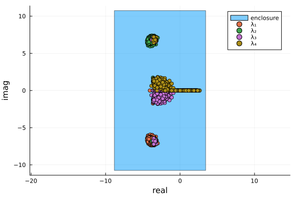
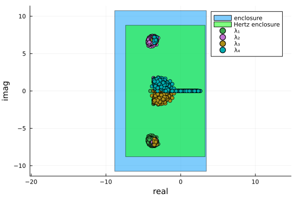

Eigenvalue computations
Eigenvalues of interval matrices
Given a (real or complex) interval matrix $A\in\mathbb{IC}^{n\times n}$, we define the eigenvalue set
\[\mathbf{\Lambda}=\{\lambda\in\mathbb{C}: \lambda\text{ is an eigenvalue of }A\text{ for some }A\in\mathbf{A}\}.\]
While characterizing the solution set $\mathbf{\Lambda}$ (or even its hull) is computationally challenging, the package offers the function eigenbox which contains an interval box containing $\mathbf{\Lambda}$.
At the moment, eigenbox is not rigorous, that is the computations for the non-interval eigenvalue problem solved internally are carried out using normal non-verified floating point computations.
To demonstrate the functionality, let us consider the following interval matrix
using IntervalLinearAlgebra
A = [-3.. -2 4..5 4..6 -1..1.5;
-4.. -3 -4.. -3 -4.. -3 1..2;
-5.. -4 2..3 -5.. -4 -1..0;
-1..0.1 0..1 1..2 -4..2.5]4×4 Matrix{Interval{Float64}}:
[-3, -2] [4, 5] [4, 6] [-1, 1.5]
[-4, -3] [-4, -3] [-4, -3] [1, 2]
[-5, -4] [2, 3] [-5, -4] [-1, 0]
[-1, 0.100001] [0, 1] [1, 2] [-4, 2.5]Now we can bound the eigenvalue set
ebox = eigenbox(A)[-8.8221, 3.4408] + [-10.7497, 10.7497]imTo get a qualitative evaluation of the enclosure, we can simulate the solution set of $\mathbf{A}$ using Montecarlo, as it is done in the following example
using Plots
N = 1000
evalues = zeros(ComplexF64, 4, N)
for i in 1:N
evalues[:, i] = eigvals(rand.(A))
end
rpart = real.(evalues)
ipart = imag.(evalues)
plot(IntervalBox(real(ebox), imag(ebox)); ratio=1, label="enclosure")
scatter!(rpart[1, :], ipart[1, :]; label="λ₁")
scatter!(rpart[2, :], ipart[2, :]; label="λ₂")
scatter!(rpart[3, :], ipart[3, :]; label="λ₃")
scatter!(rpart[4, :], ipart[4, :]; label="λ₄")
xlabel!("real")
ylabel!("imag")"/home/runner/work/IntervalLinearAlgebra.jl/IntervalLinearAlgebra.jl/docs/build/tutorials/eigs.png"
Internally, the generical interval eigenvalue problem is reduced to a real symmetric interval eigenvalue problem, as described in [HLA13]. It is good to remind that a real symmetric matrix has only real eigenvalues. The real symmetric interval eigenvalue problem can be solved in two ways
- Rohn method – (default one) computes an enclosure of the eigenvalues set for the symmetric interval matrix. This is fast but the enclosure can be strictly larger than the hull
- Hertz method – computes the exact hull of the eigenvalues for the symmetric interval matrix. Generally, these leads to tigher bounds, but it has exponential complexity, so it will be unfeasible for big matrices.
The function eigenbox can take a second optional parameter (Rohn() by default) to specify what algorithm to use for the real symmetric interval eigenvalue problem. The following example bounds the eigenvalues of the previous matrix using Hertz(), as can be noticed by the figure below, the Hertz method gives a tighter bound on the eigenvalues set.
eboxhertz = eigenbox(A, Hertz())[-7.36904, 3.2742] + [-8.79471, 8.79471]implot(IntervalBox(real(ebox), imag(ebox)); ratio=1, label="enclosure")
xlabel!("real")
ylabel!("imag")"/home/runner/work/IntervalLinearAlgebra.jl/IntervalLinearAlgebra.jl/docs/build/tutorials/eigs2.png"
Verified floating point computations of eigenvalues
In the previous section we considered the problem of finding the eigenvalue set (or an enclosure of it) of an interval matrix. In this section, we consider the problem of computing eigenvalues and eigenvectors of a floating point matrix rigorously, that is we want to find an enclosure of the true eigenvalues and eigenvectors of the matrix. In IntervalLinearAlgebra.jl this is achieved using the verify_eigen function, as the following example demonstrates.
A = [1 2; 3 4]
evals, evecs, cert = verify_eigen(A)
evals2-element Vector{Complex{Interval{Float64}}}:
[-0.372282, -0.372281] + [-3.92467e-16, 3.92467e-16]im
[5.37228, 5.37229] + [-2.5503e-16, 2.5503e-16]imevecs2×2 Matrix{Complex{Interval{Float64}}}:
[-0.824565, -0.824564] + [0, 0]im … [-0.415974, -0.415973] + [-4.31e-33, 4.31e-33]im
[0.565767, 0.565768] + [-4.95531e-33, 4.95531e-33]im [-0.909377, -0.909376] + [0, 0]imcert2-element Vector{Bool}:
1
1If called with only one input verify_eigen will first compute an approximate solution for the eigenvalues and eigenvectors of $A$ and use that to find a rigorous bounding on the true eigenvalues and eigenvectors of the matrix. It is also possible to give the function the scalar parameters $\lambda$ and $\vec{v}$, in which case it will compute a rigorous bound only for the specified eigenvalue $\lambda$ and eigenvector $\vec{v}$. The last output of the function is a vector of boolean certificates, if the $i$th element is set to true, then the enclosure of the $i$th eigenvalue and eigenvector is rigorous, that is the algorithm could prove that that enclosure contains the true eigenvalue and eigenvector of $A$. If the certificate is false, then the algorithm could not prove the validity of the enclosure.
The function also accepts interval inputs. This is handy if the input matrix elements cannot be represented exactly as floating point numbers. Note however that this is meant only for interval matrices with very small intervals. If you have larger intervals, you should use the function of the previous section.
To test the function, let us consider the following example. First we generate random eigenvalues and eigenvectors
ev = sort(randn(5))
D = Diagonal(ev)
P = randn(5, 5)
Pinv, _ = epsilon_inflation(P, Diagonal(ones(5)))
A = interval.(P) * D * Pinv5×5 Matrix{Interval{Float64}}:
[0.936402, 0.936403] [0.279674, 0.279675] … [-1.69848, -1.69847]
[0.447544, 0.447545] [0.877925, 0.877926] [-2.63029, -2.63028]
[-0.597297, -0.597296] [-0.175461, -0.17546] [1.09658, 1.09659]
[-0.679359, -0.679358] [-0.730363, -0.730362] [3.17331, 3.17332]
[-0.455742, -0.455741] [-0.0762875, -0.0762874] [0.748057, 0.748058]Now we obtained an interval matrix $\mathbf{A}$ so that ev and P are eigenvalues and eigenvectors of some $A\in\mathbf{A}$. Note that $P^{-1}$ had to be computed rigorously using epsilon_inflation. Now we can compute its eigenvalues and eigenvectors and verify that the enclosures contain the true values.
evals, evecs, cert = verify_eigen(A)
evals5-element Vector{Complex{Interval{Float64}}}:
[0.129205, 0.129206] + [-2.28055e-14, 2.28055e-14]im
[0.199256, 0.199257] + [-1.4469e-14, 1.4469e-14]im
[0.239425, 0.239426] + [-2.06748e-14, 2.06748e-14]im
[1.40784, 1.40785] + [-2.11084e-14, 2.11084e-14]im
[1.752, 1.75201] + [-2.96325e-14, 2.96325e-14]imevecs5×5 Matrix{Complex{Interval{Float64}}}:
[0.464507, 0.464508] + [-9.66118e-27, 9.66118e-27]im … [-0.418756, -0.418755] + [-8.55938e-28, 8.55938e-28]im
[0.231485, 0.231486] + [-1.79648e-26, 1.79648e-26]im [-0.526097, -0.526096] + [-2.68475e-28, 2.68475e-28]im
[-0.171825, -0.171824] + [-3.88423e-27, 3.88423e-27]im [0.316312, 0.316313] + [-8.6986e-28, 8.6986e-28]im
[-0.798156, -0.798155] + [0, 0]im [0.633858, 0.633859] + [0, 0]im
[0.253122, 0.253123] + [-7.84346e-27, 7.84346e-27]im [0.214559, 0.21456] + [-6.00399e-28, 6.00399e-28]imcert5-element Vector{Bool}:
1
1
1
1
1ev .∈ evals5-element BitVector:
1
1
1
1
1Note also that despite the original eigenvalues and eigenvectors were real, the returned enclosures are complex. This is because any infinitesimally small perturbation in the elements of $A$ may cause the eigenvalues to move away from the real line. For this reason, unless the matrix has some special structure that guarantees the eigenvalues are real (e.g. symmetric matrices), a valid enclosure should always be complex.
Finally, the concept of enclosure of eigenvector may feel confusing, since eigenvectors are unique up to scale. This scale ambiguity is resolved by starting with the approximate eigenvector computed by normal linear algebra routines and fixing the element with the highest magnitude.
complex_diam(x) = max(diam(real(x)), diam(imag(x)))
complex_diam.(evecs)5×5 Matrix{Float64}:
1.79246e-13 1.37321e-12 0.0 3.40283e-14 5.07372e-14
3.31013e-13 5.0504e-13 7.66998e-13 2.44749e-13 1.83187e-14
7.11098e-14 5.66824e-13 2.34979e-13 0.0 4.99045e-14
0.0 0.0 5.24858e-13 2.42195e-13 0.0
1.38112e-13 9.49574e-13 1.32783e-13 4.42979e-14 3.71647e-14As can be seen, for each eigenvector there's an interval with zero width, since to resolve scale ambiguity one non-zero element can be freely chosen (assuming eigenvalues have algebraic multiplicity $1$). After that, the eigenvector is fixed and it makes sense to talk about enclosures of the other elements.